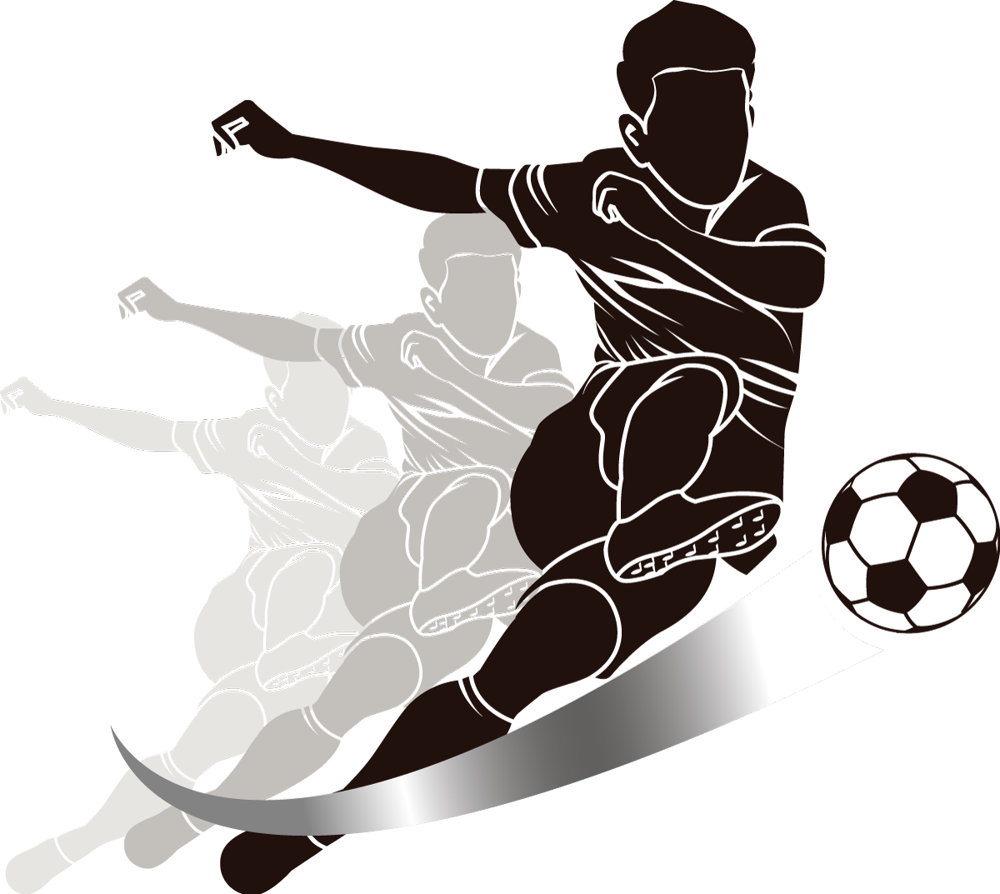
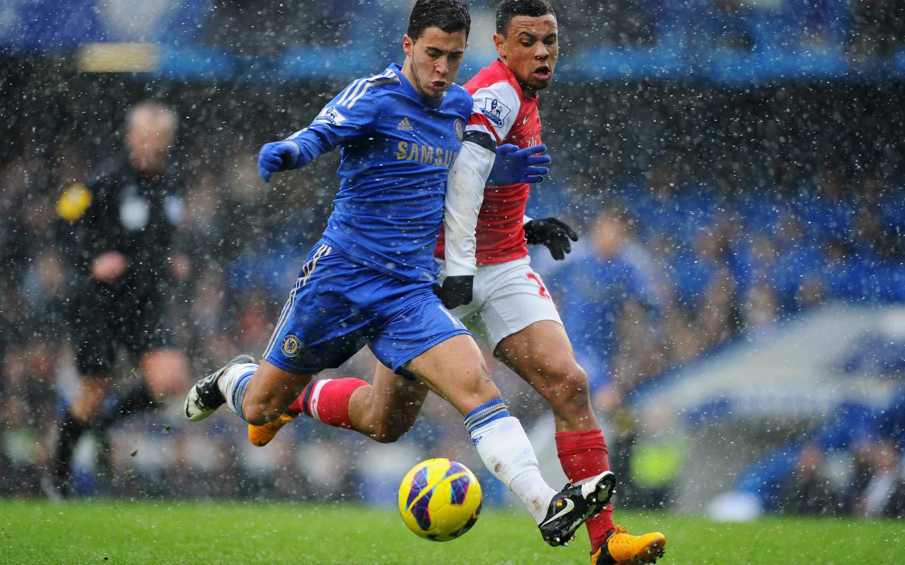

Футбо́л (англ. football от foot «ступня» + ball «мяч») — командный вид спорта, в котором целью является забить мяч в ворота соперника ногами или другими частями тела (кроме рук) большее количество раз, чем команда соперника. В настоящее время самый популярный и массовый вид спорта в мире.
В XIX веке футбол в Англии приобрёл популярность, сравнимую с крикетом[14]. В него играли в основном в колледжах[15]. В некоторых колледжах правила разрешали ведение и передачу мяча руками, в других это, напротив, запрещалось[16]. Первая попытка создать единые правила была предпринята в 1863 году, когда встретились представители нескольких колледжей. Они установили первый свод правил[17]. В 1857 году был основан первый специализированный футбольный клуб — «Шеффилд»[18]. В 1863 году после долгих переговоров был принят свод правил Футбольной Ассоциации Англии. Также были приняты размеры поля и ворот[19]. А в 1871 году был основан Кубок Англии — старейший футбольный турнир в мире[20]. В 1891 году было принято правило о пенальти. Но сначала пенальти билось не с точки, а с линии, которая так же, как и сейчас, находилась на расстоянии 11 метров от ворот".
После избрания Жюля Риме президентом ФИФА в 1921 году было ратифицировано предложение считать последующие Олимпийские футбольные турниры «чемпионатами мира по футболу среди любителей». Эти турниры — 1924 и 1928 годов — выиграла сборная Уругвая[29]. Благодаря этим успехам у Ассоциации футбола Уругвая не было конкурентов в борьбе за организацию первого в истории Кубка мира ФИФА (более известного в русском языке просто как чемпионат мира по футболу), который прошёл в 1930 году. Уругвайцы стали победителем домашнего первенства, трёхкратными чемпионами мира по футболу и первыми обладателями Кубка мира ФИФА. Это стало началом новой эры в истории футбола[30]. До 1970 года этот трофей носил имя Жюля Риме, также был известен как «Кубок богини Нике», но после третьей победы сборной Бразилии на чемпионате мира был отдан ей на вечное хранение. Вместо него стал разыгрываться современный Кубок мира.
Есть 17 официальных правил игры, каждое из которых содержит список оговорок и руководящих принципов. Эти правила предназначены для применения на всех уровнях футбола, хотя есть некоторые изменения для таких групп, как юниоры, взрослые, женщины и люди с ограниченными физическими возможностями. Законы очень часто формулировались в общих чертах, которые позволяют упростить их применения в зависимости от характера игры. Правила игры публикуются в ФИФА, но поддерживаются Международным советом футбольных ассоциаций (IFAB)[36].
Каждая команда состоит максимум из одиннадцати игроков (без учёта запасных), один из которых должен быть вратарём. Правила неофициальных соревнований могут уменьшить количество игроков, максимум до 7. Вратари являются единственными игроками, которым позволено играть руками при условии: они делают это в пределах штрафной площади у своих собственных ворот. Хотя есть различные позиции на поле, эти позиции не обязательны[37].
Отдельная футбольная игра называется матч, который в свою очередь состоит из двух таймов по 45 минут. Пауза между первым и вторым таймами составляет 15 минут, в течение которой команды отдыхают, а по её окончании меняются воротами[38].
Цель игры — забить мяч в ворота противника, сделать это как можно большее количество раз и постараться не допустить гола в свои ворота. Матч выигрывает команда, забившая большее количество голов.
В случае, если в течение двух таймов команды забили одинаковое количество голов (ничья), то или фиксируется ничья, или победитель выявляется согласно установленному регламенту матча. В этом случае может быть назначено дополнительное время — ещё два тайма по 15 минут каждый. Как правило, между основным и дополнительным временем матча командам предоставляется перерыв. Между дополнительными таймами командам даётся лишь время на смену сторон. Одно время в футболе существовало правило, по которому победителем объявлялась команда, первой забившая гол (правило «золотого гола») или выигрывавшая по окончании любого из дополнительных таймов (правило «серебряного гола»). В настоящий момент дополнительное время либо не играется вовсе, либо играется в полном объёме (2 тайма по 15 минут). Если в течение дополнительного времени победителя выявить не удаётся, проводится серия послематчевых пенальти, не являющихся частью матча: по воротам противника с расстояния 11 метров пробивается по пять ударов разными игроками. Если количество забитых пенальти у обеих команд будет равным, тогда пробиваются по одной паре пенальти, пока не будет выявлен победитель[39].
Мяч, забитый непосредственно со штрафного удара в ворота соперника, засчитывается. Мяч, забитый со штрафного удара в собственные ворота, не засчитывается; противоположная команда в такой ситуации получает право на угловой удар.Штрафные удары - 1 из самых красивых вещей в футболе.
Создателем современного футбола считается английский преподаватель физической культуры – Уильям Уэбб Элис. В 1848 году он разработал правила игры, которые были приняты и стали основой для современного футбола. Однако, идея современного футбола не возникла у Уильяма Элиса сама по себе. Он использовал многие правила, которые были установлены в других играх, таких как регби и футбол ручной игры.
Если хочешь узнать больше,то кликай)